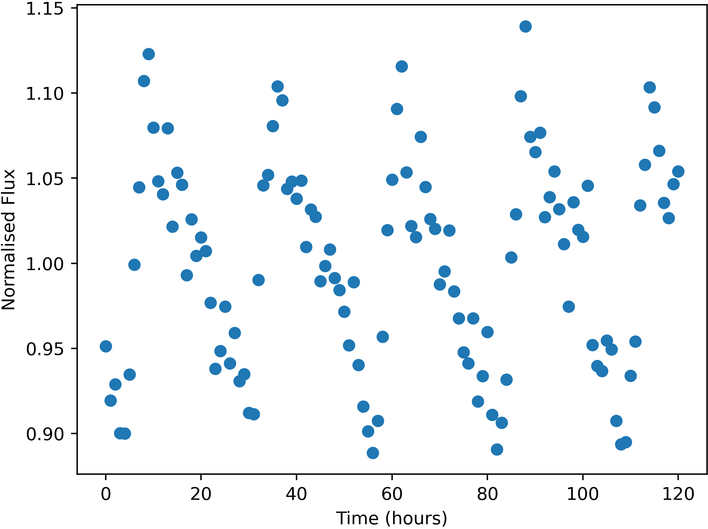

Some stars in the sky were found to change in apparent brightness over time, usually following a periodic trend.

Example of a variable star lightcurve - star FrontS61430
Units of the variable data are:
Uncertainties in this data (one standard deviation) are:
Here is a list of the flashes detected, with their approx. positions and number of photons detected. Positions are given by where they would appear in the relevant wide-field camera image. Positions are only accurate to 0.05 degrees (one standard deviation).
The X-Ray camera is sensitive to burts of more than 174 photons only.
| Name | Direction | X | Y | Photon-Count |
|---|---|---|---|---|
| FE01 | Front | -32.58 | 13.17 | 389 |
| FE02 | Top | 10.37 | 34.50 | 3000 |
| FE03 | Top | 27.03 | 24.92 | 544 |
| FE04 | Front | 10.29 | 32.23 | 90931 |
| FE05 | Right | -42.24 | -15.99 | 515 |
| FE06 | Bottom | -16.41 | 12.34 | 4894 |
| FE07 | Front | -9.15 | -15.87 | 548 |
| FE08 | Left | 10.77 | 35.82 | 576 |
| FE09 | Left | 10.85 | 35.74 | 543 |
| FE10 | Back | -28.10 | 1.36 | 508 |
| FE11 | Right | -42.23 | -16.00 | 478 |
| FE12 | Right | -15.79 | -35.26 | 530 |
| FE13 | Front | -28.71 | -11.83 | 356 |
| FE14 | Bottom | -34.77 | 18.73 | 596 |
| FE15 | Right | -14.15 | -16.64 | 385 |
| FE16 | Front | -23.27 | 8.62 | 387 |
| FE17 | Left | 41.92 | -15.73 | 505 |
| FE18 | Top | 26.93 | 24.80 | 496 |
| FE19 | Front | -32.20 | -33.24 | 2914 |
| FE20 | Bottom | 21.41 | 31.74 | 297 |
| FE21 | Front | -32.44 | 13.23 | 364 |
| FE22 | Bottom | 21.46 | 31.71 | 299 |
| FE23 | Front | -23.04 | 8.38 | 353 |
| FE24 | Top | -23.20 | 7.33 | 2761 |
| FE25 | Front | -23.32 | 8.40 | 382 |
| FE26 | Bottom | -1.20 | 20.54 | 523 |
| FE27 | Top | -30.53 | 27.45 | 6287598 |
| FE28 | Front | -23.01 | 8.60 | 411 |
| FE29 | Top | 26.78 | 24.69 | 496 |
| FE30 | Front | -32.44 | 13.23 | 397 |
| FE31 | Front | -32.30 | 13.16 | 387 |
| FE32 | Front | 34.91 | 20.92 | 352 |
| FE33 | Bottom | -29.70 | -36.57 | 440 |
| FE34 | Top | 17.23 | 16.75 | 657 |
| FE35 | Bottom | -29.57 | -20.36 | 544 |
| FE36 | Top | 26.97 | 24.52 | 516 |
| FE37 | Front | -32.35 | 13.16 | 407 |
| FE38 | Front | 28.72 | 18.18 | 64551 |
| FE39 | Bottom | -29.58 | -36.53 | 471 |
| FE40 | Back | -32.45 | -2.31 | 18875715 |
| FE41 | Right | 9.89 | 11.73 | 4611263 |
| FE42 | Bottom | -29.56 | -36.52 | 491 |
| FE43 | Back | -28.07 | 1.50 | 553 |
| FE44 | Top | -18.44 | 23.20 | 1521 |
| FE45 | Left | 0.01 | 3.41 | 749 |
| FE46 | Top | 17.23 | 16.75 | 731 |
| FE47 | Right | 21.40 | 25.83 | 6133667 |
| FE48 | Top | -22.99 | 7.14 | 2916 |
| FE49 | Front | -29.07 | 0.43 | 461 |
| FE50 | Front | -23.08 | 8.35 | 384 |
| FE51 | Back | -26.79 | -42.13 | 708 |
| FE52 | Front | -28.93 | -11.78 | 341 |
| FE53 | Bottom | -29.90 | -36.42 | 437 |
| FE54 | Front | 29.17 | 17.50 | 64520 |
| FE55 | Bottom | 21.29 | 31.68 | 291 |